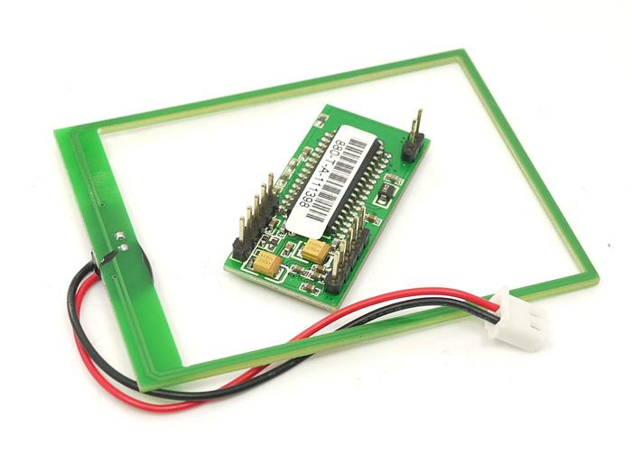
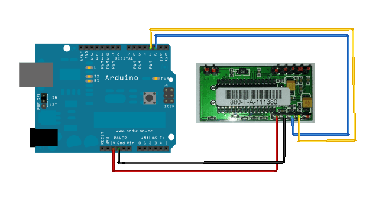

Model:RFR105A1M

Click here to buy: http://www.seeedstudio.com/depot/1356mhz-rfid-module-iosiec-14443-type-a-p-196.html
Other related products and resources.
This documentation is licensed under the Creative Commons Attribution-ShareAlike License 3.0 Source code and libraries are licensed under GPL/LGPL, see source code files for details.
Links to external webpages which provide more application ideas, documents/datasheet or software libraries.
The SeeedStudio 13.56Mhz RFID module is an RFID reader capable support ISO14443A, Mifare series card over a serial line. It can easely be attached to an arduino to have RFID fun.
.-----------------------------.
| [1][2] [5][4][3][2][1] |
| J3 J1 |
| RDM880 (top view) |
| J2 |
| [5][4][3][2][1] |
.-----------------------------.
J1:(accessory pins) PIN 1 -- LEDG (Green led) PIN 2 -- 5V (DC) PIN 3 -- GND PIN 4 -- LEDR (Red led) PIN 5 -- BUZ (Buzzer)
J1 Alt: Note that some units are arranged:
PIN 1 -- PIN 2 -- PIN 3 -- LED1 (Green led) PIN 4 -- LED2 (RED led) PIN 5 -- BUZ (Buzzer)
J2:(Communication using serial 9600 8N1 TTL level) PIN 1 -- RESET (pull low to reset e.g. set default baudrate) PIN 2 -- RX PIN 3 -- TX PIN 4 -- GND PIN 5 -- 5V (in) J3: PIN 1 -- + Antenna PIN 2 -- - Antenna
Use the J2 pin headers to connect 5 volt and the ground as shown in the picture. Connect the TX (Pin 3) to the Arduino digital pin 2 and RX to digital pin 3 as shown bellow. It is not needed to connect the reset as long as you don't change the default connection speed.

[PROTOCOL-821-880_2_.pdf] describes the protocol used for now we only created a small program to read the RDIF tag number when pressing enter in the Serial monitor of the Arduino IDE
Warning: when writing your sketches use only system, Type-A and Mifare commands. ISO14443-B and ISO15693 are accepted only by RDM880-T-E (not 'A') reader! And as of today (21 may, 2012) remember that this module does not support anticollision for Mifare cards -- sometimes it tells there's more than one card, but there's no way to address the non-default card. It's a firmware issue, confirmed by manufacturer.
#include <SoftwareSerial.h>
SoftwareSerial mySerial(2, 3);
char txrxbuffer[255];
char get_readID[] = { 0xAA , 0x00, 0x03, 0x25, 0x26, 0x00, 0x00, 0xBB };
void setup()
{
Serial.begin(57600);
Serial.println("Hit Enter to read the RFID number");
mySerial.begin(9600);
}
void loop() // run over and over
{
int counter = 0;
if (mySerial.available())
Serial.print(mySerial.read(),HEX);
if (Serial.available()){
Serial.read();
Serial.println(">");
for (counter =0 ; counter < 8 ; counter++){
mySerial.write(get_readID[counter]);
}
}
}
Copyright (c) 2008-2016 Seeed Development Limited (www.seeedstudio.com / www.seeed.cc)